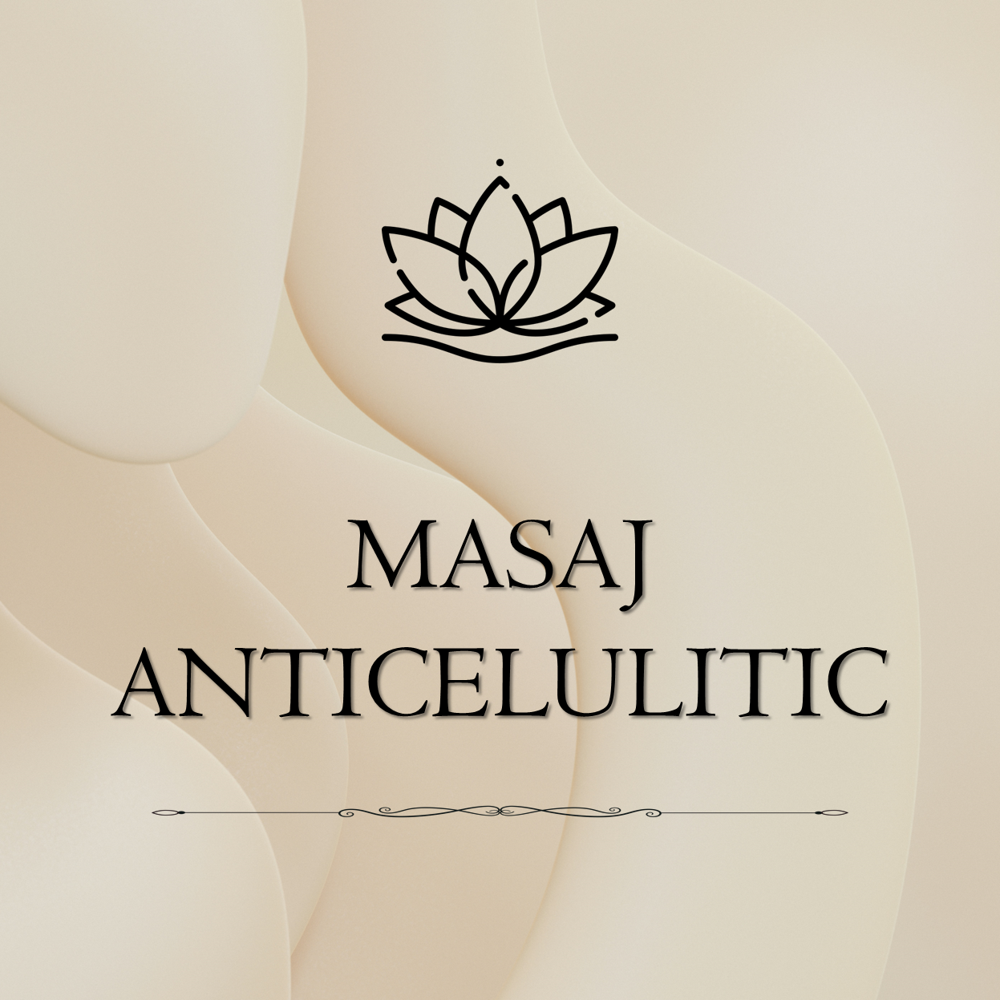

Stimulare circulatorie și reducerea aspectului de celulită
Masaj anticelulitic profesional în Brașov, destinat îmbunătățirii aspectului pielii, stimulării circulației și remodelării corporale. Fiecare ședință este adaptată nevoilor tale.

Masaj intens care stimulează circulația sanguină și limfatică, ajutând la reducerea aspectului de celulită și la îmbunătățirea texturii pielii.
Ajută la tonifierea pielii, reducerea retenției de apă, îmbunătățirea circulației și remodelarea conturului corporal.
Persoanelor care își doresc remodelare corporală, piele mai fermă și îmbunătățirea aspectului general al corpului.
Durată: 60 min
Preț: 250 RON
Masajul anticelulitic este o metodă eficientă de susținere a remodelării corporale, prin stimularea circulației și îmbunătățirea aspectului pielii. Recomandat în cure regulate.